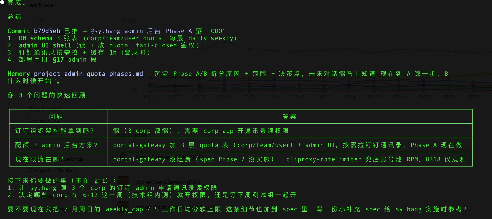
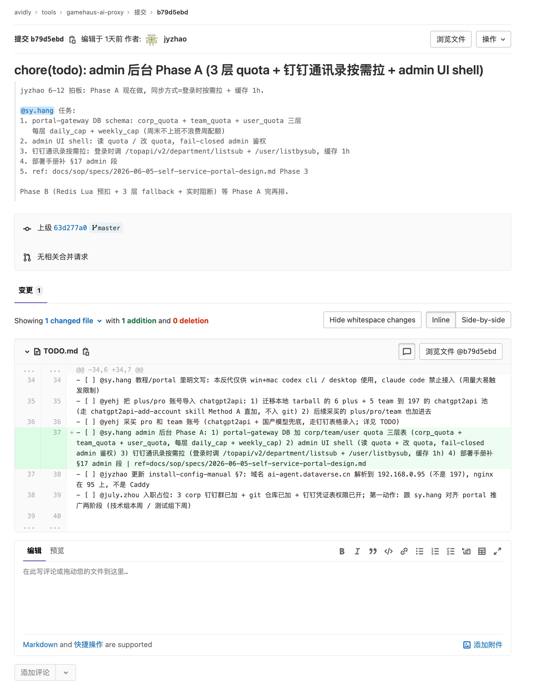
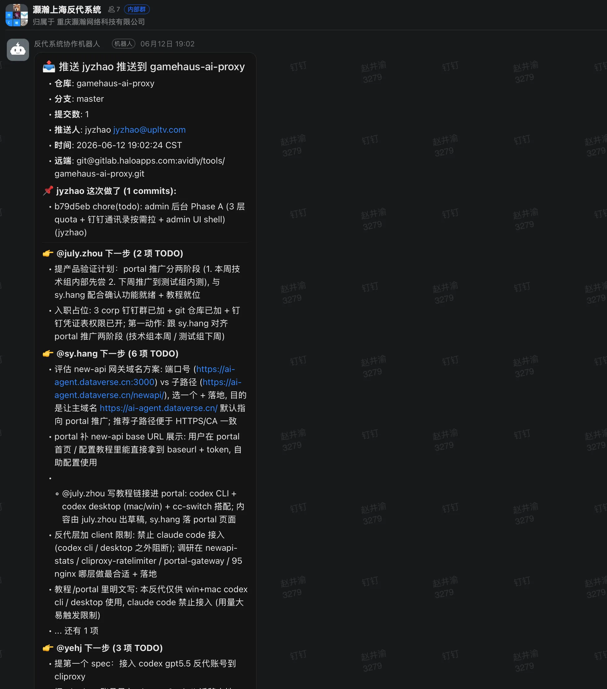
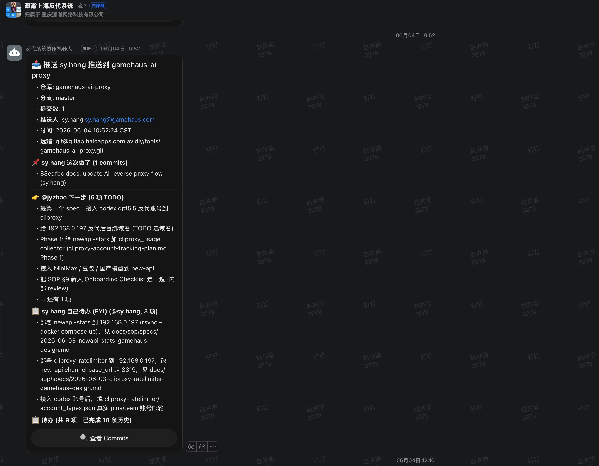

人和人的同步沟通带宽有限
会议、语音、聊天都依赖人的在线状态和上下文记忆。信息会压缩、遗漏、变形， 后续还要靠反复确认来修正。
组织效率 = 节点处理能力 × 节点间流通速度
—— 个人提速是局部最优，组织提速是系统最优。会议、语音、聊天都依赖人的在线状态和上下文记忆。信息会压缩、遗漏、变形， 后续还要靠反复确认来修正。
agent 读取 spec、plan、delivery、TODO、commit 的吞吐远高于人。 文档越结构化，交接越完整，等待越少。
从马车到汽车，不只是把马换成发动机。道路、规则、城市布局都要重做。 AI Native 组织也要重做流程、权限、事实源和广播机制。
需求、边界、验收、决策和交付结果进入 spec / plan / delivery / TODO。 聊天只负责触发和提醒，不承担长期记忆。
人负责目标、判断、授权和结果。agent 负责读上下文、写文档、拆计划、执行、 验证、总结和交接。
文档是 agent 的协议层。借助 superpowers 等 skill， agent 不只产出 spec 和 plan，还能把「为什么这么决策」「考虑过哪些方案」 沉淀成可追溯的思考和决策文档，让下一个 agent 接手时 看到的不只是「做什么」，还有「为什么」。
钉钉群代表一个项目现场；机器人把 commit、部署、完成事项和待配合 TODO 广播给相关人。关键结论仍回写到文档。
git 负责版本化事实源，钉钉 doc MCP 负责私有配置和文档协议， 钉钉群机器人负责实时广播。三者缺一，链路即断。
评估流程时看 Spec→Delivery 周期、交接等待时间、返工率和阻塞点， 不只看单个 agent 写了多少代码。
人保留判断权和责任，agent 承担吞吐量。
—— 这一句是整套原则的总纲。目标、范围、验收标准、风险、决策记录先落文档，减少口头解释。
push 之后，其他人的 agent 可以读取、质疑、补充、拆计划。
问题编号化，答案回写 spec，不让重要信息停留在群聊。
每个阶段有 commit、测试结果和 delivery 摘要，机器人自动广播进项目群。
协作人不需要重新听一遍背景，agent 直接读取文档和 git 记录，按 TODO 继续推进。
@jyzhao 负责需求和技术架构， @sy.hang 接技术实现， @july.zhou 接产品验收。 群机器人把交付、阻塞和下一步责任人一并广播，协作人不用再问「我该做什么」。
feat(admin_quota): Phase A/B 部分提测
git 不只记录代码，也记录需求、架构、实现和验收的接力链路。 任何人、任何 agent 接手时，都能看到谁在什么时间做了什么，以及下一棒应该找谁。
产品同学只需要问一句「有什么需要我做的」， agent 就把架构输入、技术实现状态、我的验收 TODO、通过后的流转对象 一次性列出来。协作不再依赖记忆和口头确认。




单位时间内，
高质量业务结果的综合提升。
一句话提醒：AI 调用次数、token 消耗量、生成代码行数，都只是「用了 AI」的证据， 不是「组织变强」的证据。真正要看的是更多、更快、更好、更可控： 业务结果、质量提升、组织流速和治理风险必须一起评估。
新建项目钉钉群和 git 仓库，下载 SOP 模板文档 ↓ 放进项目根目录。模板会自动初始化 spec / plan / TODO / delivery 目录结构， 后续新项目重复这一步即可。
每个人把自己的 agent 接入项目。装上 superpowers ↗ skill 集合，再接上 钉钉 MCP ↗ ，让 agent 能读写文档、调用钉钉能力。
在群里连接好钉钉机器人，做好三件事的映射： 钉钉机器人 ↔ 项目 git 地址 ↔ 群里相关人。 让 push、delivery、阻塞自动广播给正确的人。
开始按 spec → plan → TODO → delivery 的闭环发布任务。 用北极星指标和五维评估表持续优化，跑出真实数据再扩张到更多项目。
文档里写满了 git、commit、agent 这些词，但底层结构 —— 目标 → spec → 执行 → delivery → 接力 —— 对任何岗位都成立。 把 git 换成文档版本、把 commit 换成交付物，业务团队立刻能用。
agent 已经从「帮工程师写代码」走向「帮任何人完成结构化工作」。 业务、运营、市场、客服都在长出自己的 agent 协作模式， 这场分享里的所有原则和三件套同样适用。
当 agent 协作成为常态，会出现专门的 cowork 产品把整条链路做顺。 我们今天手工搭的 git + 钉钉 doc MCP + 群机器人链路， 未来会被产品化、被普及、被更多非技术人员直接用上。
单个人 token 消耗的上限是边际效应递减的。 普及一定的人均 token 消耗量是基础，但更重要的是 把 agent 之间的接力做顺—— 让每一个节点产出的思考和决策，都能被下一个节点高速接住。